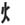

|  | fireleft |
| firebottom |
| KA |
as in : 'my CAR caught on fire the other day. (FYI : It was a Pinto. ) ' |
|
A person on fire, surrounded by 2 sparks. |
| ひ |
flame
★★★★★ |
| 火曜日 |
Tuesday
★★★★★
KUN ON
|
| 火事 |
fire
★★★☆☆
A fire - not like the fire in your stepdad's crackpipe; like the fire that spreads from his crackpipe and engulfs your whole trailer. |
| 花火 |
fireworks
★★☆☆☆
KUNKUN
|
|
fire
火事 炎 火災 火 |
 KANJIDAMAGE
KANJIDAMAGE
 Number
47
Number
47